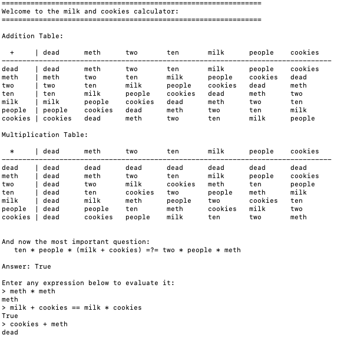

Milk and Cookies: An Abstract Algebra
Suppose you're sitting in an electronics class on a Wednesday. Your teacher, always eager to retain the attention of the TikTok generation, decides to attempt a colorful metaphor.
The subject is electrical power:
Power = Voltage * Current
So the teacher says:
Imagine their are 2 parties in your neighborhood and we want to know their power:
- Party 1: Ten people are sitting around quietly eating milk and cookies 😴
- Party 2: Two people are losing their minds on meth 🤪
And these parties end up having the same power, that is:
10 * people * (milk + cookies) = 2 * people * meth
The class chuckles as their neural-plasticity forms a lifelong bond between electrical power, milk, cookies, and meth.
But you wonder:
What happens when you multiply people by meth?
So you invent a new algebra.
Abstract Algebra: Fields
A Field is like normal math except the numbers are Weird. But we can still add, subtract, multiply, and divide these weird numbers.
We can also use cool words like Group, Ring, GF(n), Galois-Fields, Extension-Fields, etc to make outsiders confused and boost our fragile egos. This part is only required in some special groups. 🥁
You can read the real definition here
Numbers for GF(7)
Here are our weird numbers:
dead, people, milk, cookies, meth, two, ten
Fortunately, 7 elements suggests that we can find an isomorphism to GF(7)
and we won't have to deal with the polynomials of GF(p^k) extension fields (or in other words:
we won't have to giberish our gibberishy into gibberishum due to the gibberish-theorem: hooray!).
Naturally, we'll assign "dead" <=> 0, "two" <=> 2, and "ten" <=> 10.
But 10 isn't in GF(7) and instead maps to 10 - 7 = 3.
Simplifying our constraint equation
Our constraint equation is:
ten * people * (milk + cookies) = two * people * meth
But, people just create problems so let's get rid of them:
ten * (milk + cookies) = two * meth
We'll need the to divide by "ten" or multiply by it's inverse:
inv("ten") = inv(3) = 5 [check: 3*5 = 15 == 1 (mod 7)]
Simplifying further:
inv(ten) * ten * (milk + cookies) = inv(ten) * two * meth
milk + cookies = 5 * 2 * meth
milk + cookies = 10 * meth
milk + cookies = ten * meth
milk + cookies = 3 * meth
Assigning the remaining numbers
Here, we notice that 3 is an additive-group-generator for GF(7) which tells us that milk + cookies can result in anything that's 10 meth potent. And, this is why a crazy guy named Santa will eat them 336,150,386 times in a single evening to fuel his global chimney-riding adventures (link).
We need to now find a valid assignment given that we've already assigned these:
"dead" <=> 0
"two" <=> 2
"ten" <=> 3
The following are left: 1, 4, 5, 6
Assigning "meth" <=> 6 seems appropriate as it's some powerful stuff, alas that would require
milk + cookies = 4. Unfortunately, we'd need 1 and 3 and we've already assigned "ten" <=> 3
Let's make a table of possibilities:
| meth | 3 * meth | milk + cookies = 3 * meth |
|---|---|---|
| 1 | 3 | 4 + 6 = 3 |
| 4 | 5 | (not assignable with 1,5,6) |
| 5 | 1 | (not assignable with 1,4,6) |
| 6 | 4 | (not assignable with 1,4,5) |
So, I guess meth is the multiplicative identity: "meth" <=> 1 which is like super deep man.
The Full Isomorphism to GF(7):
"dead" <=> 0
"meth" <=> 1
"two" <=> 2
"ten" <=> 3
"milk" <=> 4
"people" <=> 5
"cookies" <=> 6
Some Powerful Results
From this algebra we can deduce many facts about ordinary life:
| expression | result | discussion |
|---|---|---|
people * meth |
people |
That's a relief. You're still a person. Not "milk" or "cookies" or.. "dead" |
milk + meth |
people |
Hmmm.. like a chia pet? |
cookies * cookies |
meth |
Makes sense: Cookies are Great! |
cookies + meth |
dead |
Public Service Announcement: Avoid! |
milk + cookies = milk * cookies |
true | There's no wrong way to have milk and cookies |
Calculator (link)
I wrote a fun little calculator for exploring this algebra (here)
It will print out the addition and multiplication tables and evaluate arbitrary expressions:

Conclusion
What does this have to do with the Power Formula, you ask?
Thanks for asking. That was very kind of you. And the answer is: Nothing. Absolutely nothing. Now, I could make up a long and winding story to connect back to the power formula that might distract you from the boring things in your life, but I'd rather just have some milk and cookies 🥛 🍪
Finally, stay away from meth, boys and girls! 🛑
After all, you can just have Squared Cookies instead. Cubic, Quartic, Quintic, and other higher-dimensional cookie consumptions are safe as well! If you do make a higher-dimensional cookie, you should send me one (email)
Have a lovely day!